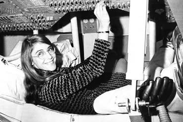

Dentro da Apollo
Hamilton jovem explorando a cabine de uma nave do programa Apollo — NASA
Registro Fotográfico
Momentos marcantes da trajetória de Margaret Hamilton

Hamilton jovem explorando a cabine de uma nave do programa Apollo — NASA
Hamilton ao lado de um computador durante sua carreira no MIT, anos 1980
Margaret Hamilton em foto recente — uma das grandes mentes da computação moderna
Homenagem concedida pelo presidente Barack Obama em 2016
As fotografias desta galeria documentam diferentes fases da vida e carreira de Margaret Hamilton, desde seus anos no MIT até o reconhecimento internacional.